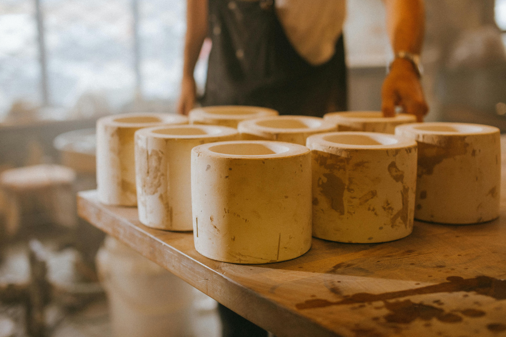
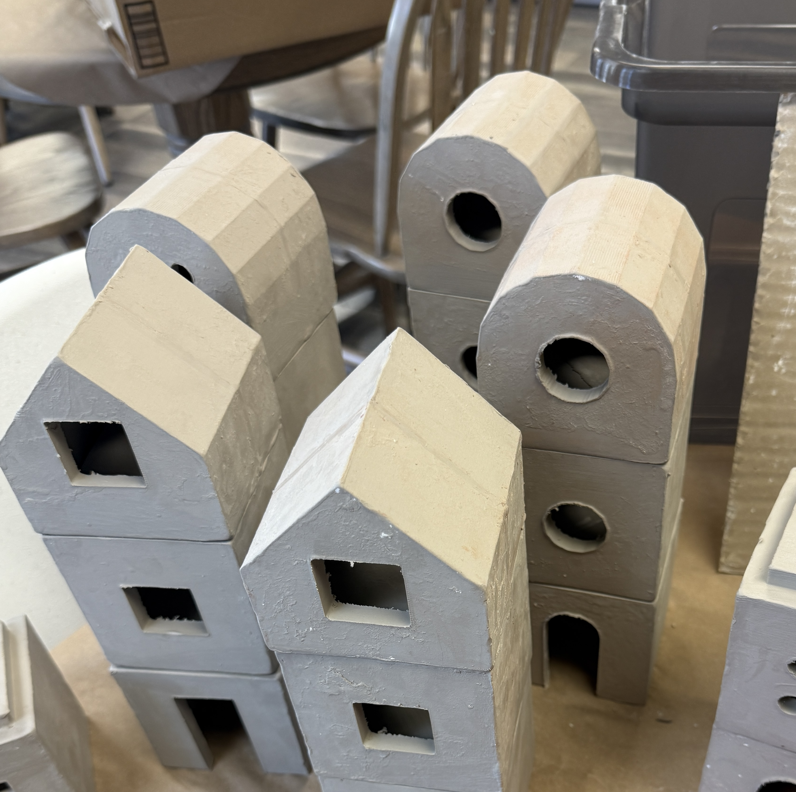
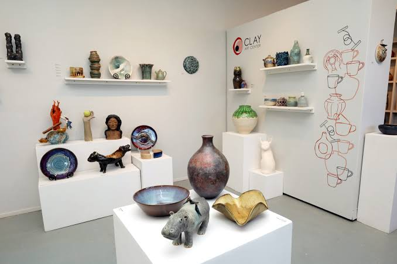

Welcome to Earth to Art
Ceramics are all around us. From dishes and decorative objects to sculptures and works of art, ceramic materials have become an important part of everyday life and artistic expression.
Earth to Art was created to explore the ceramic process and help viewers understand the artistic and creative process behind this unique medium. Our goal is to explore how natural materials can be transformed into functional objects and works of art.

What is Ceramics?
Ceramics begin with natural materials such as clay and can eventually become pottery, sculptures, decorations, and countless other objects. The process involves much more than simply shaping clay.
Learn about how clay is prepared, shaped, dried, glazed, and transformed through the firing process.
Click to Learn About the Process
About Earth to Art
Earth to Art is an educational website created for people who are interested in ceramics and want to learn more about the art form.
We are interested in the relationship between nature, creativity, science, and art. Ceramics provide an opportunity to explore all of these ideas through one medium.
Whether you are completely new to ceramics or already enjoy ceramic art, Earth to Art provides information and resources to help you explore further.

Visit Local Galleries
Discover galleries and museums where ceramic artwork can be viewed in person.
Click Here
Explore Local Artists
Learn about ceramic artists and discover their artwork, studios, and creative work.
Click Here